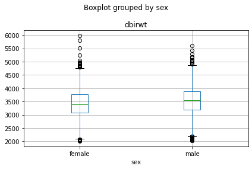
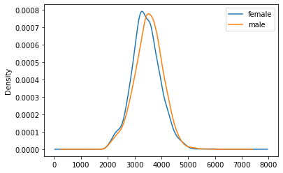
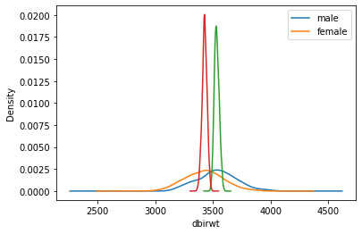
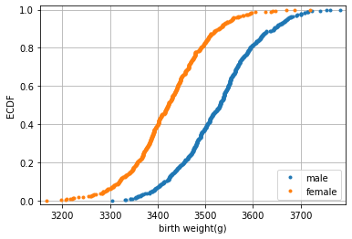
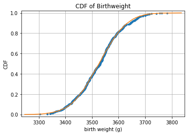

import numpy as np
import matplotlib.pyplot as plt
import pandas as pd
from numpy import random
random.seed(42) #What is this for ???9 Sampling Distributions
Overview
- Taking Samples
- Variation of samples
- The \(1/\sqrt{n}\) law
- Distributions
- densities
- ecdfs
- Parametric (“analytic”) versus nonparametric (“hacker statistics”)
- Confidence Intervals
- Testing
- Resampling
- Permutations
- Bootstrap
Importing libraries
Importing the Birthweights Dataframe
df = pd.read_csv("https://raw.githubusercontent.com/markusloecher/DataScience-HWR/main/data/BirthWeights.csv")
#df = pd.read_csv('../data/BirthWeights.csv')[["sex", "dbirwt"]]
df = df[["sex", "dbirwt"]]
df.head()| sex | dbirwt | |
|---|---|---|
| 0 | male | 2551 |
| 1 | male | 2778 |
| 2 | female | 2976 |
| 3 | female | 3345 |
| 4 | female | 3175 |
df.groupby("sex").mean()| dbirwt | |
|---|---|
| sex | |
| female | 3419.186742 |
| male | 3507.089865 |
Operator Overloading
The [] operator is overloaded. This means, that depending on the inputs, pandas will do something completely different. Here are the rules for the different objects you pass to just the indexing operator.
- string — return a column as a Series
- list of strings — return all those columns as a DataFrame
- a slice — select rows (can do both label and integer location — confusing!)
- a sequence of booleans — select all rows where True
In summary, primarily just the indexing operator selects columns, but if you pass it a sequence of booleans it will select all rows that are True.
df = df[(df[ "dbirwt"] < 6000) & (df[ "dbirwt"] > 2000)] # 2000 < birthweight < 6000
df#.head()| sex | dbirwt | |
|---|---|---|
| 0 | male | 2551 |
| 1 | male | 2778 |
| 2 | female | 2976 |
| 3 | female | 3345 |
| 4 | female | 3175 |
| ... | ... | ... |
| 4995 | male | 4405 |
| 4996 | male | 2764 |
| 4997 | female | 2776 |
| 4998 | female | 3615 |
| 4999 | male | 3379 |
4909 rows × 2 columns
Boxplot of weight vs. sex
df.describe()| dbirwt | |
|---|---|
| count | 4909.000000 |
| mean | 3480.557344 |
| std | 529.280103 |
| min | 2012.000000 |
| 25% | 3146.000000 |
| 50% | 3486.000000 |
| 75% | 3827.000000 |
| max | 5981.000000 |
tmp=df.boxplot( "dbirwt","sex")
plt.tight_layout()
We notice a small difference in the average weight, which is more clearly visible when we plot overlaying densities for male/female
bwghtBySex = np.round(df[["dbirwt","sex"]].groupby("sex")[["dbirwt"]].mean())
print(bwghtBySex, '\n')
print('mean: ',bwghtBySex.mean()) dbirwt
sex
female 3427.0
male 3533.0
mean: dbirwt 3480.0
dtype: float64tmp=df[["dbirwt","sex"]].groupby("sex")["dbirwt"].plot(kind='density', legend=True)
A/B Testing
Let us hypothesize that one wanted to classify babies into male/female solely based on their weight. What would its accuracy be if we applied the following simple rule:
if dbirwt > 3480 y = male else y = female
This would be the equivalent of testing for global warming by measuring the temperature on one day. We all know that it took a long time (= many samples) to reliably detect a small difference like 0.5 degrees buried in the noise. Let us apply the same idea here. Maybe we can build a high-accuracy classifier if we weighed enough babies separately for each sex.
Confusion Matrix for simple classifier
df["predMale"] = (df["dbirwt"] > 3480)
ConfMat = pd.crosstab(df["predMale"], df["sex"])
ConfMat| sex | female | male |
|---|---|---|
| predMale | ||
| False | 1331 | 1105 |
| True | 1100 | 1373 |
N = np.sum(ConfMat.values)
acc1 = np.round( (ConfMat.values[0,0]+ConfMat.values[1,1]) / N, 3)
#Acc0 = (1331+1373)/5000
print("Accuracy of lame classifier:", acc1)
#Think about the baseline accuracyAccuracy of lame classifier: 0.551Distributions
Mean Density Comparison Function
Write a function which:
- draws repeated (e.g. M=500) random samples of size n (e.g. 40, 640) from each sex from the data
- Computes the stdevs for the sample means of each sex separately
- Repeats the above density plot for the sample mean distributions
- computes the confusion matrix/accuracy of a classifier that applies the rule \(\bar{x} > 3480\).
Hint: np.random.choice(df["dbirwt"],2)
def mean_density_comparison(df_cleaned, M=500, n=10):
#Generate a sex iteration array
sex_iter = ['male', 'female']
#Create an empty DataFrame with 'sex' and 'dbirwt' column
columns = ['sex', 'dbirwt']
df_new = pd.DataFrame(columns=columns)
#Create an empty array to store the standard deviation of the differnt sex 'male' = std_dev[0], 'female' = std_dev[1]
std_dev = np.empty(2)
#Iterate over sex and create a specific data subset
for ind,v in enumerate(sex_iter):
subset = df_cleaned[df_cleaned.sex == v]
#create M random sample means of n samples and add it to df_new
for i in range(M):
rand_samples = np.random.choice(subset.dbirwt, n)
x = np.mean(rand_samples)#sample mean per sex
df_new.loc[len(df_new)+1] = [v, x]
#plot male and female data and calculate the standard deviation of the data
plot_data = df_new[df_new.sex == v]
std_dev[ind] = np.std(plot_data['dbirwt'])
plot_data.dbirwt.plot.density()
plt.xlabel('dbirwt')
plt.legend(sex_iter)
#plt.grid()
#plt.title("n=" + str(n))
#return the sample mean data
return df_new
Testing the Function
SM10 = mean_density_comparison(df, M=500, n=10)
SM640 = mean_density_comparison(df, M=500, n=640)
SM10["predMale"] = (SM10["dbirwt"] > 3480)
ConfMat10 = pd.crosstab(SM10["predMale"], SM10["sex"])
ConfMat10| sex | female | male |
|---|---|---|
| predMale | ||
| False | 320 | 182 |
| True | 180 | 318 |
SM640["predMale"] = (SM640["dbirwt"] > 3480)
ConfMat640 = pd.crosstab(SM640["predMale"], SM640["sex"])
ConfMat640| sex | female | male |
|---|---|---|
| predMale | ||
| False | 498 | 0 |
| True | 2 | 500 |
grouped640 = SM640["dbirwt"].groupby(SM640["sex"])
print("n=640, means:", grouped640.mean())
print()
print("n=640, SESMs:", grouped640.std())n=640, means: sex
female 3427.276397
male 3533.081803
Name: dbirwt, dtype: float64
n=640, SESMs: sex
female 20.937106
male 19.819436
Name: dbirwt, dtype: float64SM40 = mean_density_comparison(df, M=500, n=40)
grouped40 = SM40["dbirwt"].groupby(SM40["sex"])
print("n=40, means:", grouped40.mean())
print()
print("n=40, SESMs:", grouped40.std())n=40, means: sex
female 3423.30740
male 3527.34015
Name: dbirwt, dtype: float64
n=40, SESMs: sex
female 82.787145
male 84.921927
Name: dbirwt, dtype: float64How much smaller is \(\sigma_{\bar{x},640}\) than \(\sigma_{\bar{x},40}\) ? Compare that factor to the ratio of the sample sizes \(640/40 = 16\)
Empirical Cumulative Distribution Function
The density -like a histogram- has a few complications that include the arbitrary choice of bin width (kernel width for density) and the loss of information. Welcome to the empirical cumulative distribution function ecdf
ECDF Function
def ecdf(data):
"""Compute ECDF for a one-dimensional array of measurements."""
# Number of data points: n
n = len(data)
# x-data for the ECDF: x
x = np.sort(data)
# y-data for the ECDF: y
y = np.arange(1, n+1) / n
return x, yECDF Plot
# Compute ECDF for sample size 40: m_40, f_40
male40 = SM40[SM40.sex == "male"]["dbirwt"]
female40 = SM40[SM40.sex == "female"]["dbirwt"]
mx_40, my_40 = ecdf(male40)
fx_40, fy_40 = ecdf(female40)
# Plot all ECDFs on the same plot
fig, ax = plt.subplots()
_ = ax.plot(mx_40, my_40, marker = '.', linestyle = 'none')
_ = ax.plot(fx_40, fy_40, marker = '.', linestyle = 'none')
# Make nice margins
plt.margins(0.02)
# Annotate the plot
plt.legend(('male', 'female'), loc='lower right')
_ = plt.xlabel('birth weight(g)')
_ = plt.ylabel('ECDF')
# Display the plot
plt.grid()
plt.show()
- What is the relationship to quantiles/percentiles ?
- Find the IQR !
- Sketch the densities just from the ecdf.
Checking Normality of sample mean distribution
# Compute mean and standard deviation: mu, sigma
mu = np.mean(male40)
sigma = np.std(male40)
# Sample out of a normal distribution with this mu and sigma: samples
samples = np.random.normal(mu, sigma, 10000)
# Get the CDF of the samples and of the data
x_theor, y_theor = ecdf(samples)
# Plot the CDFs and show the plot
_ = plt.plot(mx_40, my_40, marker='.', linestyle='none')
_ = plt.plot(x_theor, y_theor)
plt.margins(0.02)
_ = plt.xlabel('birth weight (g)')
_ = plt.ylabel('CDF')
_ = plt.title('CDF of Birthweight')
plt.grid()
plt.show()
Tasks
- Find the “5% tails” which are just the (0.05, 0.95) quantiles
- Read up on theoretical quantiles: https://docs.scipy.org/doc/scipy/reference/generated/scipy.stats.norm.html#scipy.stats.norm
- stone age: get the “5% tails” from a normal table.
- How many stdevs do you need to cover the 90% sample interval ?
- Can you replace the “empirical theoretical cdf” from above with the exact line without sampling 10000 random numbers from a normal distribution ?
Let us recap what we observed when sampling from a “population”: The sample mean distribution gets narrower with increasing sample size n, SESM =\(\sigma_{\bar{x}} = \sigma/\sqrt{n}\). Take a look at this interactive applet for further understanding.
How is this useful ? And how is it relevant because in reality we would only have one sample, not hundreds !
Small Tasks
- Choose one random sample of size n=40 from the male babies and compute \(\bar{x}\), \(\hat{\sigma}\). Assume all that is known to you, are these two summary statistics. In particular, we do not know the true mean \(\mu\)!
- Argue intuitively with the ecdf plot about plausible values of \(\mu\).
- More precisely: what interval around \(\bar{x}\) would contain \(\mu\) with 90% probability ?
Hacker Statistic
The ability to draw new samples from a population with a known mean is a luxury that we usually do not have. Is there any way to “fake” new samples using just the one “lousy” sample we have at hand ? This might sound like an impossible feat analogously to “pulling yourself up by your own bootstraps”!
{kind=link}
But that is exactly what we will try now:
Tasks
- Look up the help for np.random.choice()
- Draw repeated samples of size n=40 from the sample above.
- Compute the mean of each sample and store it an array.
- Plot the histogram
- Compute the stdev of this distribution and compare to the SEM.
- Write a function that computes bootstrap replicates of the mean from a sample.
- Generalize this function to accept any summary statistic, not just the mean.